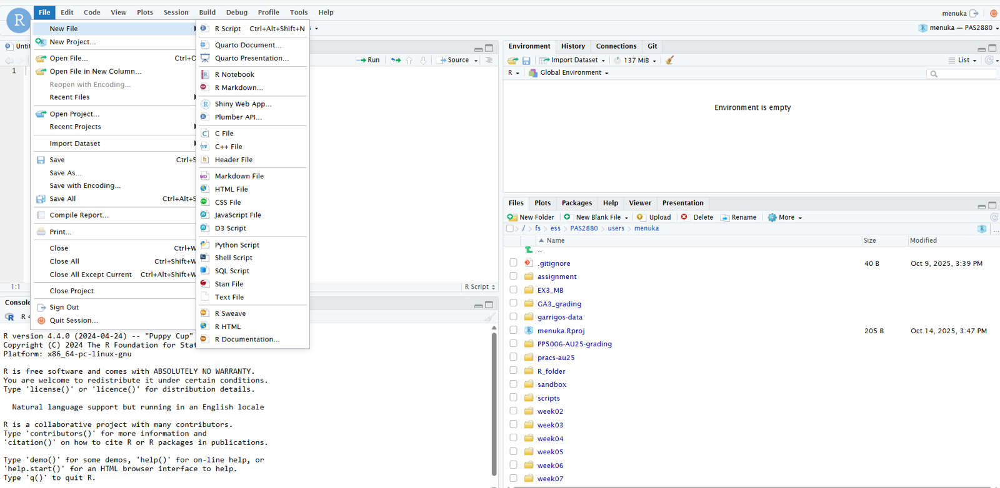
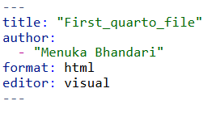
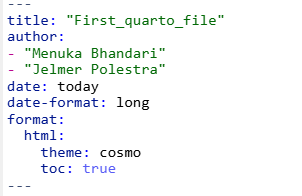
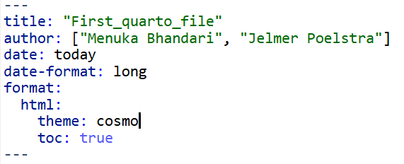
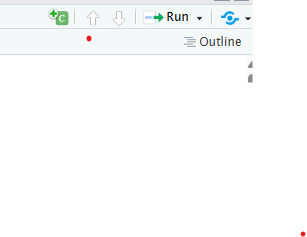

![]()
# Example code chunk
2*2[1] 4Week 12 – Lecture A
This session introduces the basics of Quarto - its three components YAML header, code chunks and text. You will learn to create Quarto documents, use several options to display/hide codes and figures, and render your Quarto source document to an output HTML document.
In this session, you will learn:
Quarto is an extension of Markdown that allows to combine prose, code, and results1. Quarto is not limited to a single programming language but can run R, Python, Julia and Observable code. Here, we will focus on using Quarto in RStudio with R.
Quarto documents are reproducible and support different output formats such as PDFs, Microsoft Word files, slide decks (presentations) and many more.
Advantages of using Quarto:
Quarto is integrated into RStudio and you don’t need to install a package or anything else for basic usage.
A Quarto file is a plain text file with a .qmd extension. To create a new Quarto document: File > New File > Quarto Document

This will open a new window with several options. We can select the Quarto outputs such as Documents, Presentation, interactive in different formats. For example, for documents, we can pick HTML, PDF or Word format. Here, we will select Document and HTML format.

This will create an new unamed Untitled.qmd file. Let’s rename it, by going to File, Save As and then save it as quarto_intro.qmd.
Rendering a Quarto document converts the .qmd document to the requested format (html/pdf or any other format). During rendering, Quarto document (.qmd) is first processed using knitr, which executes code in the documents and produces a plain Markdown file, and then convert to the final format using pandoc.
So, while rendering, all code chunks are executed and their output is embedded in the final document along with the text. However, if there are any codes that produces error, your document will not be rendered.
To render a Quarto document, click on the Render button:

You can also use a keyboard shortcut to render: Ctrl-Shift-K (Windows) or Cmd-Shift-K (Mac).
There is an option to render automatically when you save. I would not personally prefer to click it because if you are doing some computationally intensive task, it will keep rendering.
View the output document: You can view the output either in a separate window, or in the Viewer pane. The gear icon next to the Render button can be used to change output viewing settings.
A Quarto document has the following three main components:
---)We’ll go over these one-by-one now.
The header for the Quarto document is written in YAML language. It allows to specify themes, formats, executable options and many more. Additionally, it consists of series of metadata such as title, author, date etc. You can think of YAML header as the settings of the Quarto document on how to process and present your document.
It is surrounded by (---), at the top of the Quarto document. A simple example of YAML header is shown below:

We can add some additional contents to the YAML header such as authors, date, table of content and set the theme:

Some of the additional options for the YAML header can be found here.
::: callout-tip #### Project level YAML YAML header can be specified at the project level in a file named. _quarto.yml in the root directory of your project. This file can be used to set default options for all Quarto documents in the project. More information about project level YAML can be found here. #### Document level YAML Document level YAML is specified at the beginning of each Quarto document. This YAML header can override the project level YAML settings for that specific document. :::
The YAML header starts and ends with three hyphens (---). Each key-value pair should be on a new line, with a colon (:) followed by a space separating the key and value. If a value is a nested mapping, indent the nested pairs typically using two spaces per level. Keys are case-sensitive, and values can be strings, numbers, booleans, lists, or nested lists. Strings with special characters should be enclosed in quotes.
A key sets of ordered variables can be specified a YAML sequences in two different ways:
[ ]).-).
In YAML, strings do not require quotes. However, strings can be enclosed in single (' ') or double (" ") quotes to handle special characters, spaces, or to preserve formatting. - Single quotes (' ') treat the content literally - Double quotes (" ") allow for escape characters in them
TBA
theme: provide a link to the different optionsCode chunks are where you write (R) code that can be executed. These are very similar to the code blocks you are already used to in plain Markdown files, except that to “enable executability”, you enclose the language indicator (r) in curly braces ({r}):

Code chunks can be added in three different ways in RStudio:
Keyboard shortcuts: Ctrl-Alt-I (Windows) or Cmd-Option-I (Mac)
Typing it manually ```{r} followed by three back ticks ``` at the end of the chunk
Clicking the insert button in the toolbar and select R:

Several options can be added to your code chunk to customize the output of code. Some of the commonly used chunk options are:
echo: FALSE runs your code chunk, displays output, but does not display code in your final doc (this is useful if you want to show a figure but not the code used to create it)
eval: FALSE does not run your code, but does display it in your final doc
include: FALSE runs your code but does not display the code or its output in your final doc
message: FALSE prevents messages from showing up in your final doc
warning: FALSE prevents earnings from showing up in your final doc
fig.height: X and fig.width: Y will allow you to specify the dimensions of your figures (in inches)
fig.align: can be set to “left”, “right”, or “center”
fig.cap: “Your figure caption” will allow you to set a figure caption
fig.alt: “Your alt text” will allow you to set alt text for screen readers
cache: TRUE will cache results, meaning if you have a chunk that takes a long time to run, if you haven’t changed anything and you knit again, the code won’t run again but access the cache.
fig-show=hide to hide the figures
TBA - This is a very long list – I would start with a few options and demonstrate those, and then at the end present a list with additional options
More chunk options can be found here. Chunk options can be either written directly inside the curly braces or by using #| (YAML syntax) before the code chunk where each #| line sets one option:
# Example code chunk
2*2[1] 42*3[1] 6TBA - Expand on this and clarify the paragraph below
You can change the default option of the chunk. Suppose you want to show just the figures and table without showing the command that produces it. You can do it in the Quarto YAML header under execute, by adding the following global option:execute: echo :false.
Chunks can be labelled in Quarto using #| label: chunk-name before the code chunk. The chunk name should be unique and cannot contain spaces.
Advantages of labeling chunks:
2 + 3[1] 55 * 6[1] 30There are several different options to run individual code chunks:
Ctrl-Shift-Enter (Windows) or Cmd-Shift-Enter (Mac)Ctrl-Enter (Windows) or Cmd-Enter (Mac)Additional notes:
# symbol.TBA - Add screenshot highlighting the triangle signs - and show this in action in class
TBA
The “default text” in Quarto documents is Markdown, unlike in R scripts, where everything is considered code until commented out by #. Therefore, you can directly write regular text outside the code chunks. Quarto text syntax is based on Pandoc Markdown which is similar to original Markdown syntax we discussed in Week02
Headings are created by using # followed by a space and the heading. Quarto supports six levels of headings.
Visual editor:
Source editor: Example 1:
Inline code- The R code can be directly added in the text using single back ticks followed by r such as 4 which will produce 4 in the output document.
TBA - Since they are used to Markdown, I would start by not using the Visual editor. But this could be a good place to introduce the visual editor
palmerpenguins installed in week11 exercise and save the penguins data in a object called penguin_data.flipper_length_mm (x-axis) and body_mass_g (y-axis) colored by species using ggplot2 package.It is the next-generation version of R Markdown, in case you have heard of that.↩︎